The high-level generic assembly module in GetFEM++¶
Description¶
The high level generic assembly module of GetFEM++ and its weak form language is a key module which allows to describe weak formulation of partial differential equation problems. See the description of the language in the user documentation section Compute arbitrary terms - high-level generic assembly procedures.
Files¶
| File(s) | Description |
|---|---|
| getfem_generic_assembly.h | Main header for exported definitions. Only this header has to be included to use the generic assembly. Other headers of the module are for internal use only. |
| getfem_generic_assembly_tree.h and getfem_generic_assembly_tree.cc | Definition of the tree structure and basic operations on it, including reading an assembly string and transform it in a syntax tree and make the invert transformation of a tree into a string. |
| getfem_generic_assembly_fonction_and_operators.h and getfem_generic_assembly_fonction_and_operators.cc | Definition of redefined function and nonlinear operator of the weak form language. |
| getfem_generic_assembly_semantic.h and getfem_generic_assembly_semantic.cc | Semantic analysis and enrichment of the syntax tree. Include some operations such as making the derivation of a tree with respect to a variable or computing the tree corresponding to the gradient of an expression. |
| getfem_generic_assembly_workspace.cc | Methodes of the workspace object (defined in getfem_generic_assembly.h). |
| getfem_generic_assembly_compile_and_exec.h and getfem_generic_assembly_compile_and_exec.cc | Definition of the optimized instructions, compilation into a sequel of optimize instructions and execution of the instructions on Gauss point/interpolation points. |
| getfem_generic_assembly_interpolation.cc | Interpolation operations and interpolate transformations. |
A few implementation details¶
The assembly string is transformed in an assembly tree by a set of function in src/getfem_generic_assembly.cc. The process has 6 steps:
- Lexical analysis with the procedure ga_get_token(...).
- Syntax analysis and transformation into a syntax tree by ga_read_string(...).
- Semantic analysis, simplification (pre-computation) of constant expressions and enrichment of the tree by ga_semantic_analysis(...).
- Symbolic (automatic) differentiation of an assembly tree by ga_derivative(...)
- Symbolic (automatic) gradient computation of an assembly tree by ga_gradient(...)
- Compilation in a sequence of instructions with optimizations by ga_compile(...).
- Execution of the sequence of instructions and assembly by ga_exec(...).
These steps are performed only once at the beginning of the assembly. The final tree is compiled in a sequence of optimized instructions which are executed on each Gauss point of each element. The compilation performed some optimizations : repeated terms are automatically detected and evaluated only once, simplifications if the mesh has uniform type of elements, simplifications for vectorized fnite element methods.
Moreover, there is specifics function for interpolation operations (ga_interpolation(...), ga_interpolation_exec(...), ga_interpolation_Lagrange_fem, ga_interpolation_mti, ga_interpolation_im_data, ...)
Assembly tree¶
Assembly strings are transformed into assembly trees by ga_read_string(...). Assembly trees are syntax trees that are progressively enriched in information in the differents steps (semantic analysis, derivation, compilation).
The object ga_tree represents an assembly tree. It is a copyable object that only contains a pointer to the root of the tree. Each tree node is an object ga_tree_node that contains the main following information:
- node_type (function, variable value, variable gradient, operation ...)
- operation type for operation nodes.
- assembly tensor: used at execution time by optimized instructions to compute the intermediary results. The final result is in the assembly string of the root node at the end of the execution (for each Gauss point).
- term type: value, order one term (ith order one test functions), order two term (with order two test functions) or with both order one and order two test functions (tangent term).
- variable name of tests functions for order 1 or 2 terms.
- pointer to the parent node.
- pointers to the children nodes.
For example, the assembly tree for the assembly string “a*Grad_Test2_u.Grad_Test_u” for the stiffness matrix of a Laplacian problem can be represented as follows with its assembly tensors at each node:
{kind=link}
Assembly tensors¶
Assembly tensors are represented on each node by a bgeot::tensor<double> object. However, there is a specific structure in src/getfem_generic_assembly.cc for assembly tensors because there is several format of assembly tensors :
Normal tensor. The first and second indices may represent the test function local indices if the node represent a first or second order term. Remember that in GetFEM++ all tensors are stored with a Fortran order. This means that for instance a for a 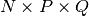 tensor one has t(i, j, k) = t[i + j*N + k*N*P].
Copied tensor. When a node is detected to have exactly the same expression compared to an already compiled one, the assembly tensor will contain a pointer to the assembly tensor of the already compiled node. The consequence is that no unnecessary copy is made.
Sparse tensor with a listed sparsity. When working with a vector field, the finite element method is applied on each component. This results on vector base functions having only one nonzero component and some components are duplicated. The tensor are fully represented because it would be difficul to gain in efficiency with that kind of small sparse tensor format. However, some operation can be optimized with the knoledge of a certain sparsity (and duplication). This can change the order of complexity of a reduction. In order to allows this gain in efficiency, the tensor are labellised with some known sparsity format (vectorisation and format coming from operation applied on vectorized tensors). This results in a certain number of sparsity formats that are listed below:
1: Vectorized base sparsity format: The tensor represent a vectorized value. Each value of the condensed tensor is repeated on
 components of the vectorized tensor. The mesh dimensions is denoted
components of the vectorized tensor. The mesh dimensions is denoted
 . For instance if
. For instance if  are the
are the  local
base functions on an element and the evaluation is on a Gauss point
local
base functions on an element and the evaluation is on a Gauss point
 , then the non vectorized tensor is
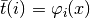 and the vectorized one is
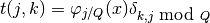
where 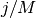 is the integer division. For 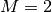,
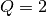 and 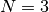 the components of the two tensors are
represented in the following table
, then the non vectorized tensor is
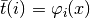 and the vectorized one is
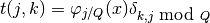
where 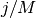 is the integer division. For 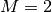,
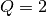 and 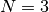 the components of the two tensors are
represented in the following tableScalar tensor Vectorized tensor 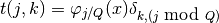 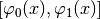 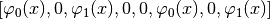 2: Grad condensed format
Scalar tensor Vectorized tensor 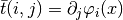 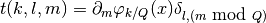 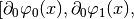 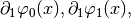 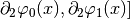 3: Hessian condensed format
10: Vectorized mass: the tensor represent a scalar product of two vectorised base functions. This means a tensor 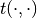 where 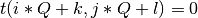 for 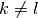 and 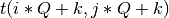 are equals for 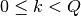.
Optimized instructions¶
Optimized instructions for variable evaluation, operations, vector and matrix assembly ... to be described.
Predefined functions¶
- Some predefined scalar functions are available in GetFEM++ weak form language in order to describe a weak formulation (or also to make basic algebraic computations). This is limited to scalar functions of one or two arguments. Due to the automatic differentiation used to obtain the tangent system of described problems, the derivative each function have to be available. The principle retained is the following: For each predefined function is available:
- A C++ function which computes the value given the argument(s).
- The support of the function in the first each argument in term of a (possibly infinite) interval (this is for simplification of expressions).
- The string corresponding of the derivative in terms of already known functions
A new predefined function is easy to add. See init_predefined_functions() in file src/getfem_generic_assembly.cc. + describe how to give the derivative ...
Predefined nonlinear operators¶
to be described ...
State¶
Stable.
Perspectives¶
- Is a certain extension to complex data possible ?
- More simplifications : study the possibility to automatically factorize some terms (for instance scalar ones) to reduce the number of operations.

目次
前のトピックへ
次のトピックへ
The low-level generic assembly module in GetFEM++
Download
Main documentations
- GetFEM++ User documentation
- Python Interface
- Matlab Interface
- Scilab Interface
- Gmm++
- GetFEM++ project